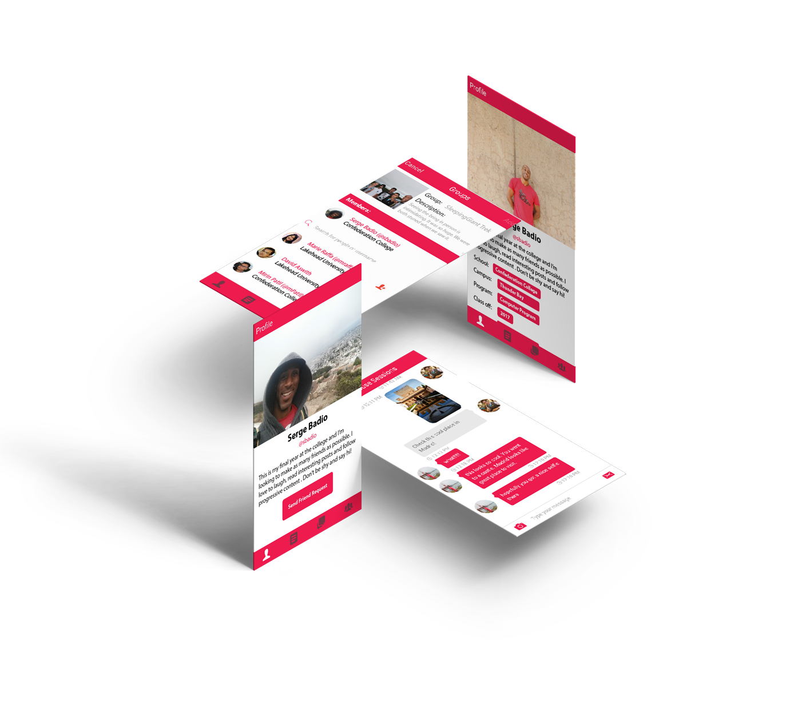

<ion-content>
  <ion-grid>
    <ion-row>
      <ion-col size="12" size-md="6" size-sx="1">
                
        <h5>
          
          

          Intl Excel was a non-profit-organization that aimed to accelerate the integration process
          of newcomers through web and mobile interfaces. As a social utility tool, the application 
          aimed to connect international and minority language learners with communities that provide them 
          with leadership training, mentorship, peer support and access to professional opportunities.  
        </h5>
        <p><b>Started:</b> 2014</p>
        <p><b>Work:</b> Co-founder, UI/UX Designer</p>
        <p><b>Status:</b> Ended September 2015 to pursue a Computer Programming College Diploma</p>
        <p><b>Features:</b> Chat, GPS Location, Local Storage</p>
        <p><b>Background:</b> Intel Excel was my first mobile application project. I was in charge 
          of getting the application developed while our co-founder was responsible for pursuing 
          grants to cover operating costs. At the time, I had no formal web development training 
          and was learning how to code on my own. I was in no position of wrting an entire app so, 
          I designed the UX/UI and hired a developer to help me bring an Angular JS MVP prototype 
          to life. By the time that the first phase of the prototype was ready, Angular 2.0 was 
          released and I had officially enrolled into college to learn how to program. Essentially, 
          I ran out of time and money as a student to pursue this venture.
        </p>
        <p><b>Tools :</b>Photoshop, Illustrator, InDesign, InVision </p>
          
        
        
      </ion-col>

      <ion-col>
    
        <ion-row class="ie-img">         
          
        </ion-row>

      </ion-col>

    </ion-row>
  </ion-grid>
</ion-content>
